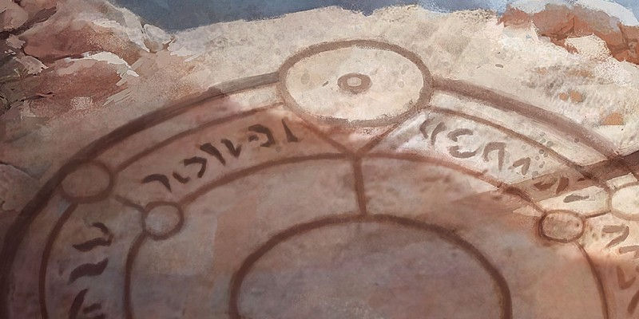

Guide de conversion à D&D 5
Ce document fournit des lignes directrices pour la conversion des personnages et des aventures des éditions antérieures de Dungeons & Dragons vers la cinquième édition. La conversion d’éléments de D&D est plus un art qu'une science. L'objectif de la conversion est d'arriver à quelque chose qui ressemble à l'ancienne édition, plutôt qu'à une réplique exacte. Les lignes directrices de ce document sont destinées à vous aider à créer ce que vous voulez, pas à vous obliger à suivre des critères particuliers.
Convertir les personnages de vos joueurs
Travaillez avec votre MD pour déterminer la meilleure solution pour votre conversion. Votre MD est l'arbitre final de toute conversion.
Niveau
Votre MD définit le niveau de départ d'un personnage converti. Pour les personnages de la quatrième édition, le niveau équivalent pour la cinquième édition est égal aux deux tiers de celui de la quatrième édition, arrondi normalement au lieu d'arrondir à l’inférieur. Par exemple, un niveau 25 dans la quatrième édition devient un niveau 17 en cinquième édition. Le niveau dans les autres éditions est convertit directement en cinquième édition, mais seulement jusqu'au niveau 20.
Race
Choisissez la race qui correspond le mieux la race de votre personnage. Par exemple, un elfe sauvage dans Faerûn est plus proche de l'elfe de bois du Manuel des Joueurs. Remplacez tous les traits raciaux par ceux de la cinquième édition et ignorez les caractéristiques qui n’ont aucune incidence sur les personnages de la cinquième édition, comme la classe de prédilection de la troisième édition ou les limitations de classe d'autres éditions.
Les maîtrises raciales du même type - compétence, outil ou arme - peuvent être remplacées par leurs équivalents en cinquième édition. Vous pouvez échanger la maitrise d’une compétence pour la maîtrise d’un outil lorsque l'outil est un meilleur équivalent d'une compétence d’une édition précédente. Par exemple, un personnage elfe sauvage doit avoir la maîtrise de lances, selon le manuel des Races de Faerûn de la troisième édition. Votre personnage pourrait alors échanger sa maitrise de l’épée longue et de l'épée courte due à la capacité Armes elfes contre celle de la lance et de la javeline. De même, si votre personnage elfe de la troisième édition s’appuyait sur la maîtrise de la rapière obtenue grâce à sa race, vous pourriez remplacer la maîtrise de l’épée longue de Armes elfes contre celle de la rapière.
Pour le MD : conversion des races
Pour les races non représentées dans le Manuel des Joueurs, consultez la section "Création d'une race" du chapitre 9 du Guide du Maître. Commencez avec les traits raciaux d'une ou plusieurs éditions précédentes et à partir de ceux-ci, reconstruisez la race en cinquième d'édition, en utilisant les races existantes et leurs caractéristiques comme modèles. Les directives générales qui suivent devraient vous aider.
Cohérence. Gardez seulement les traits raciaux qui se transmettent d'édition en édition. Surtout, ignorez une caractéristique qui n’apparaît que dans une seule édition précédente.
Valeurs de caractéristiques. Le bonus aux valeurs de caractéristiques dû à la race et à la sous-race devrait atteindre au moins +3, à moins que la race n’ait d'autres traits bénéfiques. Dans la plupart des cas, aucune valeur ne doit recevoir un bonus supérieur à +2. Trois des éditions précédentes du jeu comprenaient des ajustements raciaux négatifs aux valeurs de caractéristique, et deux d’entre elles imposaient des valeurs maximales et minimales selon la race. La cinquième édition évite de tels ajustements, mais dans le cas des races monstrueuses, comme les kobolds, des malus peuvent être appropriés.
Résistances aux dommages. Dans la cinquième édition, la caractéristique de résistance aux dégâts n’est associée à aucune valeur numérique. Une créature possède une résistance à un type de dégâts, ou elle ne la possède pas.
Infravision. L’infravision raciale est convertie directement en vision dans le noir dans la cinquième édition. Utilisez la portée de l’infravision de la race pour sa vision dans le noir, ou une portée choisie par votre MD.
Vision nocturne. La plupart des races qui ont une vision nocturne en troisième ou quatrième édition devraient avoir vision dans le noir. La portée par défaut est de 18 mètres.
Pouvoirs. Les pouvoirs raciaux peuvent être ignorés ou convertis en tant que capacité de lancer un sort à la puissance similaire. Un personnage de cette race devrait atteindre un niveau suffisamment élevé pour lancer le sort comme s'il était un lanceur de sorts. Par exemple, un lanceur de sorts doit être niveau 5 pour lancer un sort de niveau 3. Une race qui peut lancer des sorts innés doit avoir une caractéristique par défaut pour lancer des sorts choisie parmi l’Intelligence, la Sagesse ou le Charisme.
Petits modificateurs. Les races de taille Petite des autres éditions ont souvent des traits qui offrent des modificateurs pour la classe d'armure, les jets d'attaque, les jets de sauvegarde (ou de défense, et les compétences. Ignorez ces bonus, sauf s'ils sont de +4 ou supérieure et n'appliquent pas à la classe d'armure. S’il atteint cette valeur, une maîtrise ou un avantage pourrait être utilisé comme trait racial. De même, ne pas tenir compte d'un malus qui ne soit pas au moins égal à -4. Un tel malus pourrait entrainer un désavantage qui serait applicable dans ce cas.
Classe
Choisissez la classe de la cinquième édition qui correspond le mieux à la ou aux classes de votre personnage. Sinon, choisissez la catégorie qui correspond le mieux à la façon dont vous souhaitez que votre personnage soit intégré dans la partie. Il ne faut pas se sentir limité par la ou les classes d'origine de votre personnage. Par exemple, vous pouvez décider qu'occultiste ou ensorceleur convient mieux à l'histoire de votre personnage que magicien. De même, vous êtes libre de décider que la classe de paladin ou de clerc du domaine de la Guerre de cette cinquième édition exprime mieux votre guerrier/clerc que le multiclassage ne le fait. Les noms des classes peuvent encadrer votre réflexion (le roublard s'appelait voleur dans la première et la deuxième édition), mais essayez de sortir de ce carcan. Par exemple, votre vengeur de la quatrième édition pourrait être un paladin avec le serment de Vengeance ou un moine qui suit la voie de l'Ombre dans la cinquième édition. Votre gardien de la quatrième édition pourrait être un clerc avec le domaine de la Nature, un rôdeur avec l’archétype chasseur ou un paladin qui a prêté le serment des Anciens.
Le multiclassage peut être la réponse à la réalisation de nombreux concepts de personnages. Cependant, avant de se multiclasser en cinquième édition, assurez-vous qu’un archétype de classe ne correspond pas mieux à votre vision du personnage. Par exemple, l’archétype de guerrier chevalier occulte pourrait être un bon choix pour un ancien guerrier/magicien (ou même un elfe de OD&D). De même, un barde ou un roublard avec l'archétype escroc arcanique pourrait être une bonne solution pour un voleur/magicien. Le vengeur précité pourrait être un clerc/moine.
Pour le MD : conversion des classes
Si vous souhaitez recréer une classe à partir de celle d'une édition précédente, consultez la section "Modification d'une classe" du chapitre 9 du Guide du Maître. Commencez avec la description de la classe d'une ou plusieurs éditions précédentes, et comparez-la avec celle des classes existantes de la cinquième édition. À partir de là, déterminez si vous pouvez utiliser une classe existante de la cinquième édition comme modèle, et modifiez-la pour l'adapter à vos besoins. Essayez de vous appuyer sur ce qui fait la thématique de la classe à travers les différentes éditions, ainsi que sur la manière dont le joueur aimerait jouer.
Valeurs de caractéristiques
Dans la plupart des éditions, la valeur de caractéristique d'un personnage, non modifiée par magie, peut se convertir directement en cinquième édition. Dans tous les cas, la limite supérieure fixée à 20 s’applique, mais voici ci-dessous quelques instructions supplémentaires.
Force exceptionnelle. Dans la première et la deuxième édition, il était permis à certains personnages d’avoir une force exceptionnelle, exprimée en pourcentage à la suite d'une valeur de 18. La force exceptionnelle n’est pas convertie, la valeur de Force du personnage devient 18.
Caractéristiques supérieures à 20. Surtout dans la quatrième édition, des caractéristiques supérieures à 20 peuvent être rencontrées. Ces valeurs doivent être traitées comme étant des 20, ou l’option de réaffectation des valeurs de caractéristiques décrite ci-après doit être utilisée.
Réaffectation des valeurs de caractéristiques. Plutôt que de convertir les valeurs, surtout si vous avez du mal à le faire, vous pouvez suivre les règles de détermination des valeurs de caractéristique présentées dans le Manuel des Joueurs de la cinquième édition. Pour ce faire, utilisez le jeu standard de valeurs ou des valeurs personnalisées acquises en dépensant des points. Ensuite, appliquez les ajustements raciaux et les ajustements dus à la capacité Amélioration de caractéristiques de la classe, puis utilisez les valeurs de caractéristique du personnage original pour guider vos choix.
Maîtrises
Dans la cinquième édition, les maîtrises d'un personnage proviennent généralement de sa race, de sa classe et de son historique. Les maîtrises d'armes ne peuvent être modifiées qu'avec l'autorisation du MD.
Vous devez choisir un historique pour votre personnage lors de sa conversion, basé sur son histoire. Autrement, le MD peut vous aider à créer un historique approprié. Ensuite, choisissez des maîtrises qui reflètent les spécialités du personnage dans l'édition précédente. Voici quelques lignes directrices pour certaines éditions.
Deuxième édition. Vous pouvez baser le choix de l'historique sur les compétences secondaires du personnage ou sur la meilleure de ses compétences non-martiales, le cas échéant. Si votre personnage possède un kit, il pourrait être la base de votre historique.
Troisième édition. Les compétences principales de votre personnage peuvent guider le choix de votre historique. Si votre cadre de campagne fournit des avantages régionaux ou liés à l'historique, vous pouvez également les utiliser comme source d'inspiration.
Quatrième édition. L'utilisation de la méthode pour la troisième édition est possible, ou vous pouvez utiliser l'historique ou le thème du personnage comme guide.
Pour le MD : conversion des historiques
La plupart des éditions précédentes fournissent des bases pour l'historique. Les règles de la deuxième édition utilisent les compétences secondaires, les compétences utilitaires, et les kits de personnages. Les historiques, les avantages régionaux ainsi que les classes de prestige sont au cœur des règles de la troisième édition des règles. Et la quatrième édition utilise également les historiques, les avantages régionaux, et les thèmes de personnages. Dans toutes ces éditions, les compétences privilégiées d'un personnage peuvent également désigner un historique.
Dans presque tous les cas, un historique existant peut être adapté pour convertir votre personnage. Cependant, si vous sentez qu'un personnage a besoin d'un nouvel historique, lisez d'abord "Création d'un historique" du chapitre 9 du Guide du Maître. En vous basant sur des éléments du jeu en tant que modèle d'historique, vérifiez que celui-ci ne peut être modifié pour coller au personnage. Sinon, utilisez les éléments de l'édition précédente pour créer un nouvel historique. Vous pouvez utiliser la personnalité du personnage tel que joué dans des sessions de jeu précédentes pour aider à définir les traits de personnalité, un idéal, un lien et un défaut.
Dons
Dans le processus de conversion, les dons de la troisième et de la quatrième édition doivent généralement être ignorés, car les dons de la cinquième édition sont intégrés de manières très différentes par rapport à ces deux éditions précédentes. Les dons de la cinquième édition permettent de donner vie à un concept de personnage en dehors des structures de race et de classe. Utilisez ces dons s’il manque des éléments au personnage après la conversion de la race et de la classe.
Sorts
Choisissez les sorts connus comme lors de la création d'un nouveau personnage du niveau approprié. Vous pouvez baser ce choix sur les sorts connus dans l’édition précédente. De même, vous pouvez baser le choix des sorts mineurs sur les pouvoirs à volonté que le personnage connaît dans la quatrième édition. Le MD est le seul habilité à décider si et comment un sort qui n'existe pas dans la cinquième édition peut être converti.
Pour le MD : conversions des sorts
Lors de la conversion d'un sort d'une édition antérieure, votre première tâche est de veiller à ce que l'effet escompté n’existe pas déjà dans un sort en cinquième édition. Et même s'il n’existe pas, vous pourrez en trouver un équivalent. Si vous trouvez un effet similaire, vous pouvez utiliser ce sort à la place. Ou vous pouvez baser le nouveau sort sur celui existant, ce qui rend le travail plus facile.
Lorsque vous créez un sort, utilisez la section "Création d'un sort" du chapitre 9 du Guide du Maître. Le sort de l'édition antérieure est votre base de refonte. Pour les sorts complexes, tels que tremblements de terre, donnez-vous une marge de manœuvre pour déterminer les effets basés sur le contexte dans lequel le sort est jeté. Cela vous donne l'occasion de surprendre même le lanceur du sort quand celui-ci est utilisé.
Détails
Les autres détails de votre personnage restent essentiellement les mêmes, avec des exceptions possibles.
Alignement. Dans la plupart des cas, les alignements correspondent directement entre les éditions, mais les alignements de la quatrième édition et de OD&D ne correspondent pas toujours. Dans ce cas, utilisez les lignes directrices qui suivent.
Dans OD&D, vous choisissez entre loyal, chaotique ou neutre. Loyal correspondant à Bon (choisissez entre Loyal Bon, Neutre Bon ou bien Chaotique Bon). Chaotique correspond de la même manière à Mauvais (qu'il soit Loyal, Neutre ou Chaotique). Pour un personnage neutre, choisissez entre Loyal Neutre, Neutre ou Chaotique Neutre. Pour la quatrième édition, un personnage Bon devrait être au choix Neutre ou Chaotique Bon. Un personnage Mauvais devrait être au choix Loyal ou Neutre Mauvais. Un personnage non aligné peut être Loyal Neutre, Neutre ou Chaotique Neutre.
Langues. Vous devez choisir les langues à partir du Manuel des Joueurs de la cinquième édition, ou à partir d'une liste que le MD met à votre disposition et qui correspond plus étroitement aux langues de la version orginale du personnage.
Personnalité. En vous basant sur ceux de l'historique choisi, créez un trait, un idéal, un lien et un défaut pour votre personnage. Sinon, choisissez parmi ceux décrits dans votre nouvel historique.
Équipement
L'équipement devra être échangé contre son équivalent dans la cinquième édition. Le MD gère la conversion et la distribution des objets qui ne sont pas dans le Manuel des Joueurs.
Pour le MD : conversion de l’équipement
En tant que MD, vous pouvez permettre aux personnages de conserver tout objet et butin avec lesquels vous vous sentez à l'aise. Échangez les objets magiques pour leurs équivalents de la cinquième édition. Les règles de la section "Commencer à un niveau supérieur" du chapitre 1 du Guide du Maître sont une façon d'établir la richesse et les objets de départ d'un personnage dans une campagne de la cinquième édition. Et dans la plupart des cas, l'option "Haute Magie" est le meilleur choix pour représenter la distribution de trésor des éditions précédentes.
Pour l'équipement utilitaire, la plupart des objets se transforme facilement, car ils ont des effets concrets (et narratifs) et n’impliquent pas l’utilisation de mécanique de jeu. Utilisez un équipement existant comme guides et, si nécessaire, créez des mécanismes appropriés à la cinquième édition. Rappelez-vous d'utiliser le système des avantages plutôt que celui des bonus, et essayez de limiter les effets pour que ceux-ci soient équivalents ou en dessous du niveau de ceux des objets magiques communs.
Conversion des aventures
La cinquième édition de D&D est relativement compatible avec les aventures de la première, deuxième et troisième édition du jeu, tout du moins assez pour que les conversions rapides d'aventures de ces éditions soient possibles. La conversion minutieuse est également une alternative. En tant que MD, qui crée et gère les aventures, ce choix est vôtre. Les sections suivantes fournissent des lignes directrices pour les conversions minutieuses et rapides, ainsi que pour la conversion des trésors.
Conversion minutieuse
La conversion avec précision d'une aventure vers la cinquième édition nécessite plusieurs étapes. Chaque fois que vous convertissez de cette façon, utilisez ce que vous savez sur les personnages de vos joueurs pour guider le processus. Ne vous embêtez pas à convertir des éléments d'aventure que vos joueurs sont peu susceptibles de remarquer ou d’utiliser.
Difficultés des rencontres. Pour les rencontres, la première étape est généralement d’estimer leur difficulté. Cela nécessite plus d'intuition que de science. En outre, leur conception d'une édition à l'autre et d’une aventure à l’autre varie sur ce point. Pour la première et la deuxième édition, les rencontres ont souvent été conçues pour être relativement faciles. Ce type de rencontre permet aux personnages d’explorer d’avantage et de faire de nombreuses rencontres avant de se reposer ou de sortir du donjon. Idéalement, les personnages pouvaient atteindre une ou plusieurs rencontres ou zones importantes, révélant plus d'informations sur l'histoire du site de l'aventure, avant de devoir se replier. En outre, le MD pouvait plus facilement permettre à des groupes disparates d'ennemis, une fois qu'ils étaient alertés de la présence d’intrus, de rejoindre le combat en cours. Vous pouvez répliquer de tels schémas en gardant dans le donjon un degré de difficulté des groupes rencontrés entre facile et moyen, sans réduire le nombre de rencontres. Dans la troisième et quatrième édition, le niveau établi pour une rencontre permet de déterminer la difficulté de la rencontre prévue sur la base de la fourchette de niveau de l'aventure (dans le cas de la quatrième édition, le niveau de difficulté réel correspond aux deux tiers du niveau de la rencontre). Par exemple, si le niveau de la rencontre est de 9 pour une aventure prévue pour des personnages de niveau 7, la rencontre est difficile ou mortelle.
Structure des rencontres. Utilisez la description de la rencontre pour établir la liste des monstres dans la cinquième édition. Ensuite, en utilisant le facteur de puissance des monstres donné dans le Manuel des Monstres, et en s’appuyant sur la section "Création des rencontres" du chapitre 3 du Guide du Maître, modifiez la rencontre pour atteindre la difficulté souhaitée. Un aspect important de cette conversion est d'offrir une expérience semblable à celle de l’original. Le nombre de monstres importe beaucoup moins que l'impression que la rencontre donne aux joueurs. Avec cette ligne directrice à l'esprit, pensez à ajuster l’arrivée de possibles renforts. Lorsque plusieurs groupes d'opposants peuvent converger sur les personnages, cela peut donner une bataille dynamique. Mais un tel combat peut également être mortel, ce qui est bien si c'est l’objectif. Cependant, si vous voulez réduire ce nombre d'ennemis potentiels (jusqu’à zéro), déplacez-les de sorte qu'ils ne soient pas des renforts potentiels, ou placez des obstacles sur le site pour empêcher l’arrivée de ceux-ci facilement.
Types, dangers et terrains. Une rencontre comprend le type, les dangers et le terrain du site, et ces éléments peuvent intervenir avec ou sans monstres présents. La plupart du temps, vous pouvez utiliser ces éléments sans nouvelles règles ; il suffit de connaître celles du Manuel des Joueurs concernant les abris, les terrains difficiles, les chutes, retenir sa respiration, la Perception et l’Investigation, et les déplacements spéciaux. Vous pouvez effectuer des conversions exactes, comme pour les portes secrètes et les dangers de la nature sauvage, en utilisant le guide du chapitre 5 du Guide du Maître. Pour convertir les pièges et les effets nuisibles, utilisez les DD de sauvegarde des pièges et les bonus d’attaque et la sévérité des dommages par niveau de ce chapitre.
Dans la troisième et quatrième édition, les zones de rencontres sont souvent assez détaillées. Ne vous sentez pas obligé d'utiliser chaque détail présenté dans les aventures de ces éditions. Convertissez tout ce qui semble susceptible de présenter un intérêt pour vos joueurs, et laissez le reste pour l'improviser plus tard. Par exemple, une aventure de la troisième édition pourrait vous dire comment pousser un pilier, cependant les personnages décident rarement de pousser des piliers ou d'attaquer des statues, à moins que vous signaliez une faiblesse exploitable dans de telles structures. En revanche, il n’est pas inhabituel que quelqu'un essaye de briser une porte verrouillée plutôt que d’en crocheter la serrure.
Nouveaux monstres. Dans les anciennes aventures, vous rencontrez parfois des créatures qui n’ont pas d’équivalent publié dans la cinquième édition. Dans ce cas, la section "Création d'un monstre" du chapitre 9 du Guide du Maître est votre meilleur outil. La section "Conversion des races" dans ce document peut également être utile. Si vous choisissez de créer le monstre, commencez par reproduire le plus fidèlement possible le monstre original en utilisant des éléments de la cinquième édition. Utilisez les DV en tant que DV de la créature à la cinquième édition (le niveau d'un monstre de la quatrième édition permet de déterminer le nombre de DV dont il dispose). Les valeurs de caractéristique doivent être comprises entre 3 et 30 dans la cinquième édition ; les valeurs de caractéristique de la troisième et de la quatrième d'édition devront souvent être réduites. Pour les traits spéciaux et les attaques, utilisez les créatures existantes comme guides. Une fois que vous avez converti ou créé un nouveau monstre dans la cinquième édition, vous pouvez utiliser la table Statistiques des monstres par FP dans le Guide du Maître pour déterminer le Facteur de Puissance de la créature. Ensuite, vous pouvez ajuster les DV et les autres statistiques pour obtenir le Facteur de Puissance que vous désirez.
Trésors. Pour une conversion minutieuse des trésors, vous avez besoin de créer ou de relancer les trésors comme si vous recréiez l’aventure. Utilisez les tableaux Trésor individuels et Butin du chapitre 7 du Guide du Maître afin de créer de nouveaux assortiments de trésor, en utilisant ceux de l'aventure originale comme guide. Soyez sûr de lire la section "Tables de trésors" de ce chapitre pour décider comment utiliser les tables pour recréer le trésor. Voir aussi la section "Conversion de trésor" plus loin dans ce document.
Objets magiques. Autant que possible, les objets magiques doivent être échangés contre des objets magiques existants dans le Guide du Maître. Si cette stratégie échoue, son chapitre 9 comporte des règles pour modifier les objets magiques et en créer de nouveaux. Utilisez l'élément d'origine comme point de départ, et les éléments existants comme guides.
Conversion rapide
Plutôt que de passer par le travail de conversion totale, vous pouvez utiliser les aventures publiées des trois premières éditions de D&D telles quelles et «convertir» pendant la lecture en utilisant les instructions de cette section. Les aventures de la quatrième édition sont généralement prêtent pour la conversion rapide.
Dans ce cas, il sera difficile de distribuer des points d'expérience basés sur les rencontres et de déterminer la difficulté des rencontres avec précision. Par conséquent, il faut être prêt à improviser et à permettre la montée de niveaux avec des méthodes alternatives, telles que celles décrites dans le chapitre 8 du Guide du Maître. La première tâche consiste à sélectionner une aventure du niveau approprié pour vos personnages. Ceux d'un niveau situé au milieu de la fourchette des niveaux proposés sont susceptibles de trouver un meilleur défi avec moins de risques manifestes de rencontres excessivement difficiles. Dans la majorité des cas, les aventures dont la fourchette de niveaux est basse ou moyenne fonctionnent mieux avec la conversion rapide. Une fois que vous avez choisi l'aventure, utiliser les lignes directrices qui suivent.
Statistiques des monstres. Pour la première et la deuxième édition, vous pouvez utiliser les statistiques abrégées des monstres de l'aventure. Les monstres y sont souvent plus nombreux, mais ils infligent généralement des dommages inférieurs et ont moins de points de vie que leurs homologues de la cinquième édition. Apportez les modifications suivantes à ces monstres de la première et de la deuxième édition :
- La classe d'armure est égale à 19 moins la CA de la créature, jusqu'à une CA de 22.
- Le modificateur de jet d'attaque est égal à DV/2 + 2, jusqu'à +12.
- Les DD de jet de sauvegarde sont égaux à 8 + DV/2, jusqu'à 20.
- Si une créature doit faire un jet de caractéristique ou de sauvegarde, et devrait avoir un bon jet, utilisez les DV de la créature / 2 + 2 comme bonus au jet. Sinon, n’utilisez aucun modificateur, ou utilisez un malus pour refléter une faiblesse de la créature.
Dans la troisième édition, vous pouvez utiliser les statistiques des monstres inclus dans une aventure comme guide. La distribution des monstres dans cette édition est assez proche de la répartition de la cinquième édition. Comme dans les éditions précédentes, ces créatures infligent souvent des dommages inférieurs et ont moins de points de vie que leurs homologues de la cinquième édition. La plupart des statistiques de la troisième édition comprennent les valeurs de caractéristiques de la créature. Utilisez les paramètres suivants :
- La classe d'armure peut être une moyenne de la CA de contact et de la CA réelle, ou 20% inférieur à celle de la troisième édition. La limite supérieure est 22.
- Le modificateur de jet d'attaque est égal au modificateur de la caractéristique appropriée + 3.
- Les DD des jets de sauvegarde sont égaux à 10 + le modificateur de la caractéristique appropriée.
- Si une créature doit faire un jet de caractéristique ou de sauvegarde, utiliser le modificateur de la caractéristique. Accordez un bonus de +3 pour refléter un point fort de la créature.
Groupes de monstres. Si un groupe de monstres comprend 7 membres ou plus, il devrait être évalué pour éventuellement être réduit. Une telle réduction est particulièrement importante pour les personnages de niveau inférieur à 5.
Sorts. Pour les sorts, utilisez les sorts les plus proches du Manuel des Joueurs de la cinquième édition. Vous pouvez attribuer des sorts mineurs aux lanceurs de sorts, mais cela est facultatif. Les sorts de niveau 0 de la troisième édition peuvent être utilisés comme guide pour ce choix.
Pièges. Pour les pièges, improviser en utilisant le chapitre 5 du Guide du Maître. Vos meilleurs outils sont les DD de sauvegarde des pièges et les bonus d’attaque et la sévérité des dommages par niveau de ce chapitre. Conservez des copies de ces tableaux à portée de mains. Gardez également à l'esprit les dégâts de chute.
Trésors. Les aventures dans les précédentes éditions fournissent souvent plus de trésors que ce qui est habituel dans la cinquième édition. Dans la troisième édition, les PNJ étaient une source particulièrement riche d’objets magiques. Lorsque vous improvisez, n’accordez que ceux que vous serez heureux de voir acquérir par vos personnages.
Conversion des trésors
Dans la cinquième édition, les trésors ne sont pas aussi abondants et les objets magiques ne sont pas aussi nécessaires pour la performance des personnages que dans les éditions précédentes. Comme le dit le Guide du Maître, vous pouvez distribuer des trésors autant ou aussi peu que vous le voulez. Au lieu de recréer minutieusement les trésors selon les paramètres de la cinquième édition, vous pouvez utiliser les tables de ce livre comme guide pour reconstruire intuitivement le trésor d'une aventure. Alternativement, vous pouvez accorder ceux de l'aventure, mais modifiés pour tenir compte des contraintes de la cinquième édition.
Une de ces contraintes est que le bonus le plus élevé dans la cinquième édition est généralement de +3, même si un objet légendaire particulièrement puissant pourrait conférer un bonus de +4. Une arme +6 aurait été essentielle pour le fonctionnement d’un personnage de la quatrième édition, mais même une arme +1 rend un personnage similaire de la cinquième édition meilleur. Même si un personnage aurait pu avoir une arme dotée d’un bonus élevé dans une édition précédente, le maintenir dans la cinquième édition est inutile. En outre, les capacités d'une arme ou d’une armure magique, sans rapport avec son bonus, sont souvent les aspects les plus intéressants de l'objet.
Une autre contrainte, bien que moins stricte, est la quantité d'argent et de biens vendables que les personnages peuvent acquérir. Les tableaux de butins dans le Guide du Maître montrent les montants appropriés pour les trésors accumulés. À chaque niveau, un groupe d'aventuriers a accès à deux ou trois butins sur les tables appropriées.

Traduit par Garruth